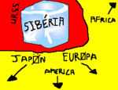

De: La Frikipedia, la enciclopedia extremadamente seria.
De: La Frikipedia, la enciclopedia extremadamente seria. De: La Frikipedia, la enciclopedia extremadamente seria.

|
FRIKIPEDIA QUIERE QUE ESTA DEFINICIÓN
PASE A SER UN ARTÍCULO FRIKIPÉDICO La información contenida en este artículo es una mínima parte de su jugo total, así que ponte los guantes, saca el tupperwere y empieza a exprimir el tema. Si lo haces serás recompensado con una galleta en almíbar y algo más. |
| De la serie Países del planeta tierra: | |||||
| Росския... ммм...
¡¡¡¡Путо эл ке ло лэа, мэга путо эл кэ но ле энтиенда!!!! | |||||
|---|---|---|---|---|---|
| |||||
| Lema: Vodka, vodka, vodka, la botella de vodka, hic... | |||||
| Himno: ¡Go West!
| |||||
| 
| |||||
| Capital | Moskarof | ||||
| Mayor ciudad | San Petesburgo | ||||
| Lenguas oficiales | Jeroglificos, cristiano y Русский | ||||
| Gobierno | Cleptocracia neosoviética democráticamente dictadúrica | ||||
| Comandante | Vladimir Putín¡ (¡Cuida el acento por favor, el acento!) | ||||
| Área | Siberia y accesorias | ||||
| Población | de 15 a 97 wasillones de rusos y contando | ||||
| Moneda | Muchas a dolar | ||||
| Zona horaria | GTM + 2, +3, +4, +5, +6, +7, +8, +9... A chingao... +10, +11 y +12 | ||||
| Dominio Internet | .vodka | ||||
| Código telefónico | +666
| ||||
| Pos si esta grande y nos dieron el Vodka, son buena gente... además las mujeres están buenas Importante: si no consigues un acoston en Moscú, entonces Bangkok es tu ultima (ULTIMA) esperanza | |||||
Antes de todo Privjet russia!!! turu turururururuturu...turu turururututuru... y decir que Rusia es el país más ulrapetante del universo ok empecemos con la informacion (info para los fresas semigays)...antiguo Lepra Rusa (Ucrania, rusos ni se sienten ná. La capital es Moscú, porque dudamos que haya alguna ciudad de cierta importancia aparte de ésta (que tampoco es que sea la leche, vamos), exceptuando San Petersburgo, que es muy bonita porque se parece a Venecia y a Berlín. Se le atribuye la invención del Tetris, su ensaladilla de denominación de origen, y la mundialmente famosa paja rusa. Mantiene desde los años 80 un espía en la nevera de la Casa Blanca.
Los primeros pobladores de Rusia (zona occidental), fueron los mamuts, los dragones y los dinosaurios, aunque luego se fueron porque ni un esquimal puede soportar semejante glaciar. Los primeros asentamientos humanos se suceden al ocupar los chinos eslavos, una sarta de adoradores del sol y del trueno, y más tarde los vikingos (si, los que pudieron haber dominado el mundo y no lo hicieron), en estas frías tierras. A partir de ahí, lo único que nos interesa es el surgimiento del Imperio del Mal, tras la revolución de 1917(Comienzo Revolución francesa rusa). En fin, el caso es que los trabajadores por fin vivirían en iguales condiciones(feudalismo hasta el S. XIX principos del XX), todos cobrarían lo mismo (dos duros por hora), comerían lo mismo (una ensaladilla rusa y dos gramos de trigo de caballo a la semana) y vivirían en un mundo plagado de florecitas y armonía, aunque lo cierto es que seguían inmersos en el más gélido clima de toda Eurasia. Con razón surgió la Guerra Fría: había que combatir las bajas temperaturas, y los soviéticos lo hacían ya sea pisando brasas, construyendo iglús o, directamente, pegándose patadas en las pelotas.
Viendo la rudimentaria vida que llevaban los pobres soviéticos, decidieron pirarse al mundo guay de Europa Occidental, tras la cual, el Imperio del Mal sufrió el ya mencionado proceso leproso que acabó con las Fuerzas Malignas de la URSS, que se desmembró como lo hiciera el Madrid de los Galácticos, pero más a lo bruto. El legado de la URSS se basa en dejar un país hecho trizas, en dejar como testimonio unos cuantos millones de petarditos para vacilar al Imperio del Bien, por entonces (y ahora) el dominador del Mundo. Estuvieron cerca de jugar a los petardos en la llamada 'Crisis de los petardos', en los sesenta. Pero ambos gallitos no llegaron a jugar a los petardos, gracias a un tio que lo sabe todo.
Actualmente, Rusia recibe como legado los petarditos obsoletos (hasta el Vaticano tiene armamento más moderno), y es uno de los primeros exportadores mundiales de putas señoras calientes, detrás de Cuba y Gran Hermano. Con todo pronóstico, la casa Rusia es hoy cuna indiscutible de la mejor mafia jugadores de ajedrez . Sorprendidos por este hecho, un puñado de buenos etólogos de la Universidad de Alicante emprendió recientemente un estudio que tratara de relacionar el frio y la corrupción con la inteligencia humana. La única conclusión: no hagas caso de un ruso, primero porque no le entenderás, y segundo porque no te enseñará a jugar ajerdrez, sino a beber mucho vodka y acabar recogiendo información para un trabajo de mierda clase en la frikipedia.
Esquemáticamente:
Talcualmente:
En este país, tenemos: Putas, corruptos, soviéticos, creadores de ak-47s, creadores de vodka, putas que no cobran, jugadores de ajedrez, inspecciones de la ONU, manifestaciones en medio del campo, mafiosos rusos, y chinos, policia, mas policia,vodka... En fin, de todo menos rusos normales.
Es posible que la población rusa se acuerde de su pasado (basicamente por el frio, a saber porqué), y por eso el gran general Putin está volviendo a conquistar el este de Europa, (véase Crimea). Debido a que el cerebro de este gran señor, fue trastornado por las neoteorias de Einstein y el vodka que le daban en la siberia de pequeño para que no llorase y pudiese dormir un poco más caliente, ha decidido viendo su pasado, que una europa suya seria una europa mejor. Gracias a ese pensamiento, hizo el cubo de rubik, y además ha desarrollado una campaña mititar intercontinental llamando al ejército, el cual se viste de terrorista ciudadano con arma (todo muy normal). Proseguidamente, son llevados por un viaje de cojones miles de kilómetros hasta Europa, donde se reúnen en Ucrania. En un futuro, esta campaña tendrá pensado hacer avanzar a los mismos rebeldes hasta marte el sur de Argentina, y así poder dominar el mundo, esta vez de verdad, hasta que un dia vengan unos meteoritos desde a saber donde júpiter, el principal enemigo, y nos destruya a todos.
También tienen entre manos hacer un nuevo prototipo de arma arrojadiza, que como nombre de proyecto se llama Nokia de diamante, el cual lo tiras (con mucho cuidado de que no te toque a ti) con tu mano hasta el infinito y más allá. Luego, el nokia destruye las pollas cabezas enemigas. Lo mejor de este prototipo es que lo puedes usar más que una bolsa del carrefour, que cuando llegues a casa podrás seguir llamando a tu tia la lola, que tan interesada está en verte como informático.
Espero que alguien te entienda con los consejillos estos :D
  Imperios de Europa Imperios de Europa
|
|---|
| Eslovaquia |
| |
|---|
| Arabia Saudita • Azerbaiyán • Bahrein • Bangladesh • Bután • Birmania • Brunéi • Camboya • Emiratos Árabes • Indonesia • Jordania • Kuwait • Kirguistán • Maldivas • Nepal • Omán • Qatar • Rusia • Singapur • Sri Lanka • Tayikistán • Timor Oriental • Yemen |
Autor(es):